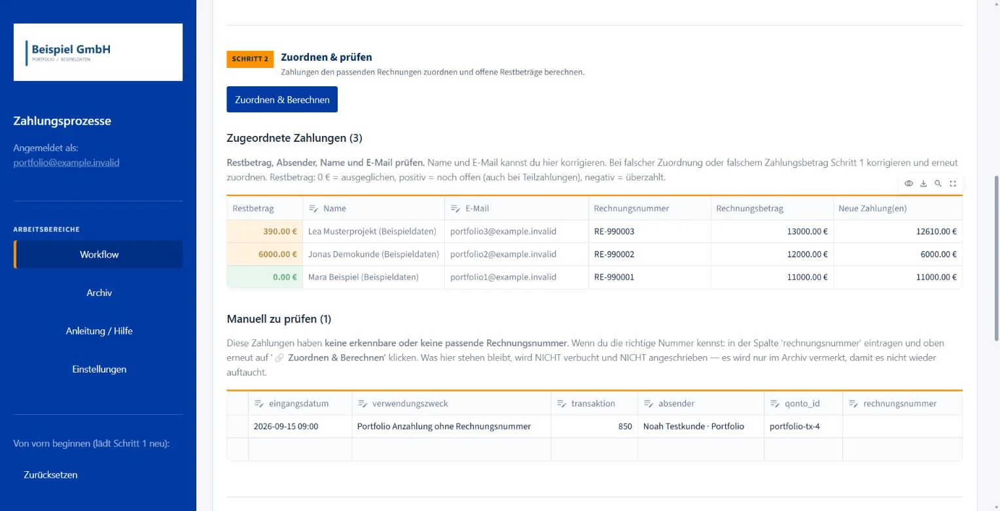

Apps & Automationen
Zahlungsabgleich mit Buchung und Kundenbestätigung
Die Anwendung gleicht Bankeingänge mit Rechnungen und erfassten Zahlungen ab. Das Office prüft Zuordnung und Restbetrag und gibt die Buchung im CRM-/ERP-System sowie die Kundenbestätigung frei.
Routinezahlungen gebündelt abschließen: Zuordnung, Freigabe, Buchung und Bestätigung folgen einem gemeinsamen Arbeitsablauf; Klärfälle bleiben separat sichtbar.

Rechnung und Zahlung über den offenen Betrag verbinden
Betrag + Verwendungszweck
Transaktionskennung hält den Eingang beim erneuten Abruf erkennbar.
Rechnung + bisher erfasste Zahlungen
Rechnungsnummer verbindet Betrag, Kunde und Empfängeradresse.
Zuordnung wird vorbereitet
Teilzahlung: Der Rest bleibt offen und erscheint in der Bestätigung.
Sammelzahlung: Ein Eingang wird der Reihe nach auf die offenen Beträge mehrerer Rechnungen verteilt.
Name, Betrag, Rest und E-Mail-Adresse kontrollieren. Erst die bestätigte Tabellenprüfung öffnet die automatische Buchung und den anschließenden Versand.
Buchung, Versand und Archivierung bleiben getrennt
| Bearbeitungsstand | Was er bestätigt | Was dadurch noch offen sein kann |
|---|---|---|
| Buchung | Der freigegebene Zahlungseingang ist über die CRM-/ERP-Oberfläche eingetragen. | Die Kundenbestätigung steht noch aus. |
| Versand | Nach erfolgreicher Buchung geht eine zusammengefasste E-Mail je Rechnung heraus, gegebenenfalls mit Restbetrag. | Der Lauf ist noch nicht im Zahlungsarchiv fortgeschrieben. |
| Archivierung | Zahlung und Bearbeitungsstände werden für spätere Läufe festgehalten. | Ein manueller Archiveintrag belegt weder Buchung noch Versand. |
Die Tabelle lässt sich auf kleinen Bildschirmen seitlich verschieben.
Unterbrechung nach Buchung, vor Archivierung
Beim Neustart kann der Eingang erneut erscheinen. Vor einem weiteren Buchungsversuch muss im Zielsystem geprüft werden, welche Einträge bereits vorhanden sind. Das Archiv allein schützt an dieser Stelle nicht vor Doppelbuchung.
Kontrollpunkte aus der Finance-Verantwortung
Zuordnungsregeln, Freigabe und Ausnahmebehandlung bilden die Kontrollpunkte des Ablaufs. Die Oberfläche bündelt den Abgleich bis zum Abschluss und macht fachliche Rückmeldungen direkt am bearbeiteten Vorgang nutzbar.
Gemeinsam bearbeitbar, kontrolliert fortgeschrieben
Bei der Aktualisierung läuft der Bankabruf parallel zum gezielten inkrementellen Abgleich von Kontakten, Dokumenten und Projekten. Das gemeinsame Zahlungsarchiv hält bereits bearbeitete Transaktionskennungen fest.
Eine Schreibsperre, Sicherungsstände vor Archivänderungen und ein Laufjournal unterstützen die Fortschreibung. Zahlungen werden auf einem Rechner zur Zeit bearbeitet; die Datei-Synchronisation muss davor und danach abgeschlossen sein. Wiederholungen im laufenden Vorgang berücksichtigen erfolgreiche Teilschritte; nach einem vollständigen Abbruch bleibt die Abschlusskontrolle notwendig.
Zeigt unter anderem: Zustände · Freigaben · Ausnahmebehandlung